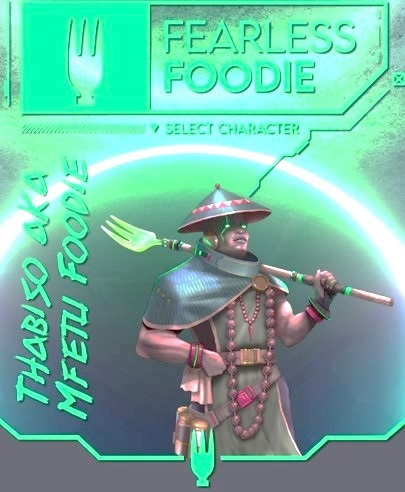
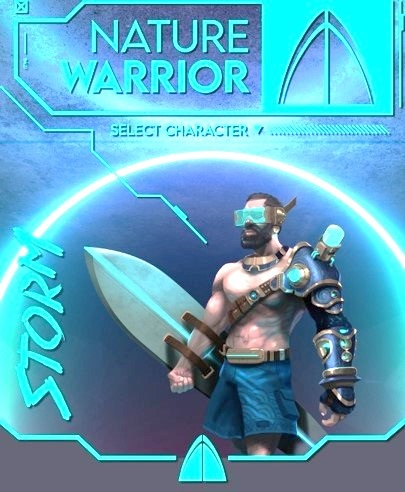

| The Characters |  |
 |
|
|---|---|---|---|
| Life Motto | "A journey of taste is the path to true happiness" | "Life is art. We're all collaboratively creating" | "Real wealth is experiencing the natural world" |
| Hobbies | Wine tasting; eating out; recipe testing | City wandering; museum hopping; theatre visits | Surfing; kayaking; hiking; discovering flowers |
| Powers |
|
|
|
Choose your character